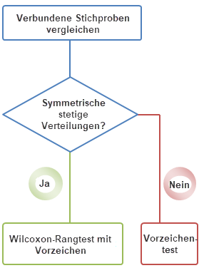
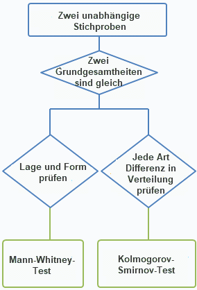
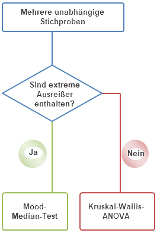

Nicht-parametrische Tests erfordern keine Annahme einer Normalverteilung. Sie werden gemeinhin in den folgenden Situationen verwendet:
| Nichtparametrisch | Parametrisch | ||
|---|---|---|---|
|
Daten aus einer beliebigen Verteilung |
Daten aus einer Normalverteilung |
||
| Eine Stichprobe | Wilcoxon-Rangtest mit Vorzeichen | t-Test bei einer Stichprobe | |
| Zwei Stichproben | Unabhängige Stichproben |
|
t-Test bei zwei Stichproben |
| Verbundene Stichproben |
|
t-Test bei verbundenen Stichproben | |
| Mehrere Stichproben | Unabhängige Stichproben |
|
Einfache ANOVA |
| Verwandte Stichproben | Friedman-ANOVA | Einfache ANOVA mit wiederholten Messungen |
Wilcoxon-Rangtest mit Vorzeichen
Der Wilcoxon-Rangtest mit Vorzeichen bei einer Stichprobe ist eine nichtparametrische Alternative zu einem t-Test bei einer Stichprobe. Der Test bestimmt, ob der Median der Stichprobe gleich einem festgelegten Wert ist. Die Daten sollten symmetrisch um den Median verteilt sein.
|
Wilcoxon-Rangtest mit Vorzeichen bei verbundenen Stichproben Der Wilcoxon-Rangtest mit Vorzeichen bei verbundenen Stichproben ist eine nichtparametrische Alternative zu einem t-Test bei verbundenen Stichproben. Es wird davon ausgegangen, dass die verbundenen Stichproben zufällig aus einer einzelnen Grundgesamtheit gezogen werden. Es wird angenommen, dass die Differenzen zwischen den verbundenen Stichproben symmetrisch um den Median herum verteilt sind. Vorzeichentest bei verbundenen Stichproben Der Vorzeichentest bei verbundenen Stichproben ist eine einfache nichtparametrische Alternative zum t-Test bei verbundenen Stichproben. Er testet Anzahlen (+) und (-) Differenzen zwischen verbundenen Stichproben und prüft, ob diese gleichermaßen präsent sind. Dieser Test wird zwar statistisch als nicht sehr leistungsstark betrachtet, erfordert jedoch als einzige Bedingung, dass die Differenzen zwischen den verbundenen Stichproben unabhängig sind, so dass diese Differenzen innerhalb der gleichen stetigen Grundgesamtheit existieren und die Messungen sich auf einer Skalierung befinden können, nach der sie untereinander als größer, gleich oder kleiner bewertet werden können. |
 |
|
Der Mann-Whitney-Test (M-W) ist eine nützliche nichtparametrische Alternative zum t-Test bei zwei Stichproben. Da der M-W-Test nahezu so leistungsstark wie ein t-Test bei zwei Stichproben, jedoch nichtparametrisch ist, wird er in bestimmten Szenarien als ein nützlicherer Test betrachtet. Der M-W-Test erzeugt häufig ein ähnliches Ergebnis wie der Kolmogorov-Smirnov-Test bei zwei Stichproben, allerdings zeigen die zwei Tests Differenzen in ihrer Sensitivität für Änderungen der Lage und Verteilung. Kolmogorov-Smirnov-Test bei zwei Stichproben Der Kolmogorov-Smirnov-Test (K-S) bei zwei Stichproben ist eine nichtparametrische Alternative zum t-Test bei zwei Stichproben. Im Allgemeinen verwendet der K-S-Test die Differenzen ohne Vorzeichen zwischen zwei Stichproben, um zu bestimmen, ob die zwei Stichproben aus der gleichen stetigen Verteilung gezogen wurden. Der K-S-Test und der Mann-Whitney-Test (M-W) können in ähnlichen Analysen verwendet werden. Auch wenn der K-S-Test weniger leistungsstark ist, wird er als umfassender betrachtet, da er sowohl Form als auch Lage der Verteilungen testet. |
 |
|
Kruskal-Wallis-ANOVA Die Kruskal-Wallis-ANOVA (K-W) ist eine nichtparametrische Alternative zur einfachen ANOVA. Die K-W-ANOVA verwendet Rangsummen, um zu bestimmen, ob drei oder mehr unabhängige Stichproben aus der gleichen Verteilung entnommen wurden (zum Vergleichen von zwei Stichproben wird der Mann-Whitney-Test häufiger verwendet). Wenn die Ergebnisse eines K-W-Tests signifikant sind, können die Post-hoc-Tests zwischen Stichprobenpaaren verwendet werden, um zu bestimmen, welche Paare signifikante Differenzen aufweisen. Mood-Median-Test Der Mood-Median-Test ist eine nichtparametrische Alternative zur einfachen ANOVA. Moods Median prüft die Wahrscheinlichkeit, mit der die Medianwerte von zwei Stichproben gleich sind und daher aus der gleichen Grundgesamtheit gezogen wurden. Moods Median berücksichtigt nur die Anzahl von Variaten, die größer oder kleiner als der Medianwert sind und nicht ihre tatsächlichen Differenzen vom Median. Deshalb wird er als eine weniger leistungsstarke Alternative zur Kruskal-Wallis-ANOVA angesehen. Nichtsdestotrotz erweist er sich als der robustere Test in den Fällen, in denen der Datensatz extreme Ausreißer enthält. |
 |
Friedman-ANOVA
Die Friedman-ANOVA ist eine nichtparametrische Alternative zur einfachen ANOVA bei wiederholten Messungen.
Die Friedman-ANOVA kann verwendet werden, um abhängige Stichproben oder Beobachtungen zu vergleichen, die bei den gleichen Subjekten wiederholt werden. Daher eignet sich der Test gut für randomisierte Blockversuchspläne.